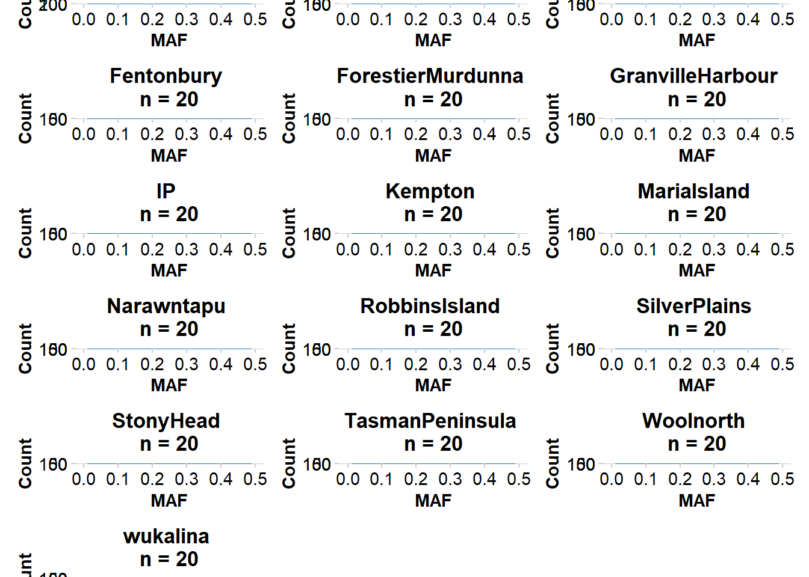
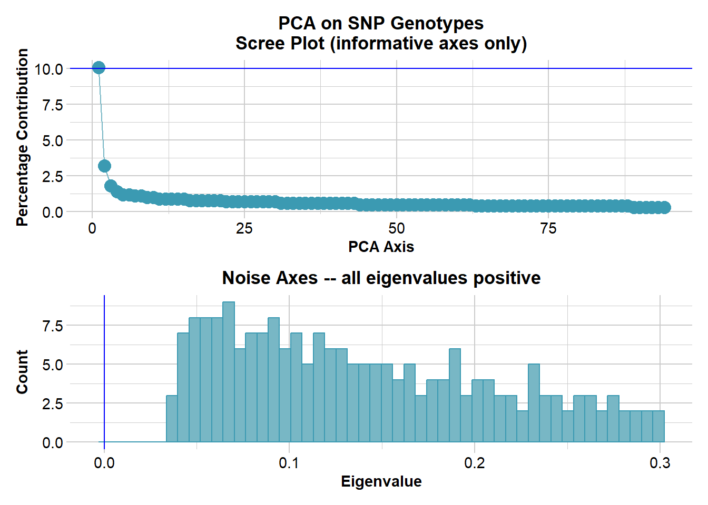
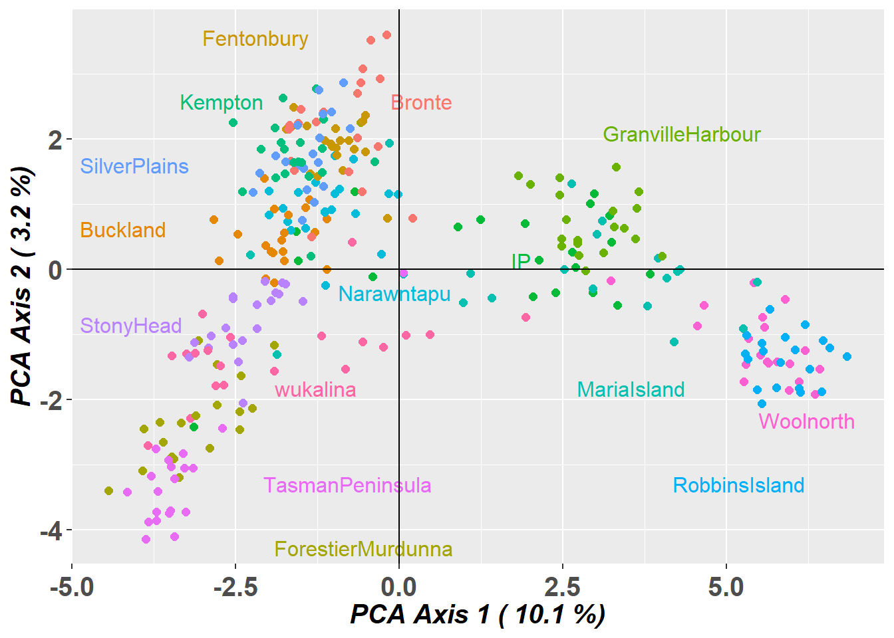
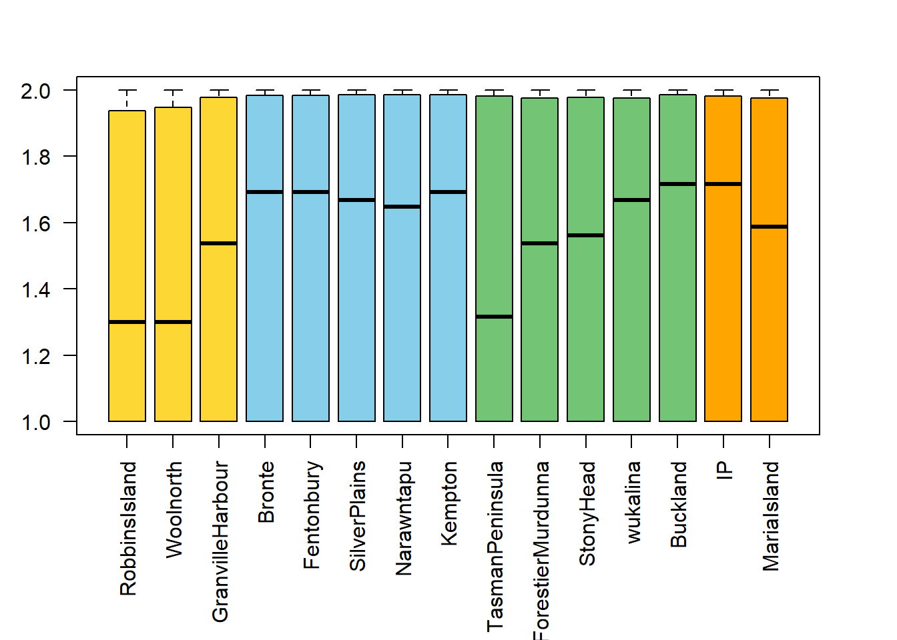
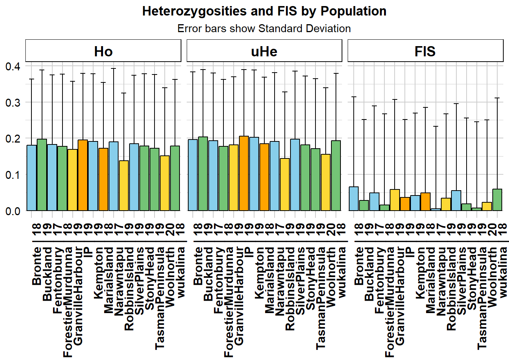

library(dartRverse)
library(hierfstat)6 Management of Small Populations
Session Presenters
Written by Kate Farquharson with input from Catherine Grueber. 
Required packages
make sure you have the packages installed, see Install dartRverse
Load data and explore
The data is a subset of the genome-wide SNPs that are publicly available from the following study: Farquharson, K.A., McLennan, E.A., Cheng, Y., Alexander, L., Fox, S., Lee, A.V., Belov, K., Hogg, C.J. (2022). Restoring faith in conservation action: Maintaining wild genetic diversity through the Tasmanian devil insurance program. iScience. 25(7):104474.
The study aims were to investigate: 1) The current genetic diversity of Tasmanian devils across their entire range 2) Whether the genetic diversity of the insurance population is representative of the species
Questions: - How many SNPs are there? - How many individuals are in the dataset? - What is the distribution of individuals in populations?
load("./data/session6_gl.Rdata")
gl /// GENLIGHT OBJECT /////////
// 300 genotypes, 1,663 binary SNPs, size: 1 Mb
35182 (7.05 %) missing data
// Basic content
@gen: list of 300 SNPbin
@ploidy: ploidy of each individual (range: 2-2)
// Optional content
@ind.names: 300 individual labels
@loc.names: 1663 locus labels
@loc.all: 1663 alleles
@pop: population of each individual (group size range: 20-20)
@other: a list containing: loc.metrics loc.metrics.flags verbose history ind.metrics summary(gl@pop) Bronte Buckland Fentonbury ForestierMurdunna
20 20 20 20
GranvilleHarbour IP Kempton MariaIsland
20 20 20 20
Narawntapu RobbinsIsland SilverPlains StonyHead
20 20 20 20
TasmanPeninsula Woolnorth wukalina
20 20 20 Allocate colours to populations
Allocate colours based on site location: East / Central / West Tasmania and captive breeding program.
levels(gl@pop) [1] "Bronte" "Buckland" "Fentonbury"
[4] "ForestierMurdunna" "GranvilleHarbour" "IP"
[7] "Kempton" "MariaIsland" "Narawntapu"
[10] "RobbinsIsland" "SilverPlains" "StonyHead"
[13] "TasmanPeninsula" "Woolnorth" "wukalina" #west = yellow; central = blue; east = green; insurance population/Maria Island = orange
tascols <- c("skyblue", "#74c476", "skyblue", "#74c476", "#FDD835", "orange", "skyblue",
"orange", "skyblue", "#FDD835", "skyblue", "#74c476", "#74c476", "#FDD835",
"#74c476")Report minor allele frequency (MAF)
Questions: - Do you notice any patterns in minor allele frequency? - Are there differences between the overall MAF distribution and that of individual populations?
gl.report.maf(gl)Starting gl.report.maf
Processing genlight object with SNP data
Starting gl.report.maf
Reporting Minor Allele Frequency (MAF) by Locus for population Bronte
No. of loci = 1178
No. of individuals = 20
Minimum : 0.025
1st quantile : 0.0556
Median : 0.1579
Mean : 0.1932487
3r quantile : 0.3125
Maximum : 0.5
Missing Rate Overall: 0.09
Reporting Minor Allele Frequency (MAF) by Locus for population Buckland
No. of loci = 1192
No. of individuals = 20
Minimum : 0.025
1st quantile : 0.075
Median : 0.175
Mean : 0.1968565
3r quantile : 0.3
Maximum : 0.5
Missing Rate Overall: 0.06
Reporting Minor Allele Frequency (MAF) by Locus for population Fentonbury
No. of loci = 1131
No. of individuals = 20
Minimum : 0.025
1st quantile : 0.06905
Median : 0.1667
Mean : 0.1972745
3r quantile : 0.3
Maximum : 0.5
Missing Rate Overall: 0.14
Reporting Minor Allele Frequency (MAF) by Locus for population ForestierMurdunna
No. of loci = 1050
No. of individuals = 20
Minimum : 0.025
1st quantile : 0.0714
Median : 0.1579
Mean : 0.1935089
3r quantile : 0.3
Maximum : 0.5
Missing Rate Overall: 0.08
Reporting Minor Allele Frequency (MAF) by Locus for population GranvilleHarbour
No. of loci = 1058
No. of individuals = 20
Minimum : 0.025
1st quantile : 0.0714
Median : 0.1667
Mean : 0.1992999
3r quantile : 0.3158
Maximum : 0.5
Missing Rate Overall: 0.07
Reporting Minor Allele Frequency (MAF) by Locus for population IP
No. of loci = 1239
No. of individuals = 20
Minimum : 0.025
1st quantile : 0.06875
Median : 0.15
Mean : 0.1921601
3r quantile : 0.3158
Maximum : 0.5
Missing Rate Overall: 0.04
Reporting Minor Allele Frequency (MAF) by Locus for population Kempton
No. of loci = 1215
No. of individuals = 20
Minimum : 0.025
1st quantile : 0.0646
Median : 0.15
Mean : 0.1941027
3r quantile : 0.3
Maximum : 0.5
Missing Rate Overall: 0.03
Reporting Minor Allele Frequency (MAF) by Locus for population MariaIsland
No. of loci = 1151
No. of individuals = 20
Minimum : 0.025
1st quantile : 0.0556
Median : 0.1389
Mean : 0.1843479
3r quantile : 0.2895
Maximum : 0.5
Missing Rate Overall: 0.08
Reporting Minor Allele Frequency (MAF) by Locus for population Narawntapu
No. of loci = 1108
No. of individuals = 20
Minimum : 0.025
1st quantile : 0.070225
Median : 0.175
Mean : 0.2010385
3r quantile : 0.3158
Maximum : 0.5
Missing Rate Overall: 0.12
Reporting Minor Allele Frequency (MAF) by Locus for population RobbinsIsland
No. of loci = 858
No. of individuals = 20
Minimum : 0.025
1st quantile : 0.0526
Median : 0.1579
Mean : 0.196336
3r quantile : 0.325
Maximum : 0.5
Missing Rate Overall: 0.04
Reporting Minor Allele Frequency (MAF) by Locus for population SilverPlains
No. of loci = 1160
No. of individuals = 20
Minimum : 0.025
1st quantile : 0.070225
Median : 0.1579
Mean : 0.1978576
3r quantile : 0.3158
Maximum : 0.5
Missing Rate Overall: 0.07
Reporting Minor Allele Frequency (MAF) by Locus for population StonyHead
No. of loci = 1042
No. of individuals = 20
Minimum : 0.025
1st quantile : 0.075
Median : 0.175
Mean : 0.2036118
3r quantile : 0.325
Maximum : 0.5
Missing Rate Overall: 0.07
Reporting Minor Allele Frequency (MAF) by Locus for population TasmanPeninsula
No. of loci = 962
No. of individuals = 20
Minimum : 0.025
1st quantile : 0.075
Median : 0.1875
Mean : 0.208041
3r quantile : 0.325
Maximum : 0.5
Missing Rate Overall: 0.05
Reporting Minor Allele Frequency (MAF) by Locus for population Woolnorth
No. of loci = 935
No. of individuals = 20
Minimum : 0.025
1st quantile : 0.0667
Median : 0.1579
Mean : 0.1929913
3r quantile : 0.3
Maximum : 0.5
Missing Rate Overall: 0.03
Reporting Minor Allele Frequency (MAF) by Locus for population wukalina
No. of loci = 1160
No. of individuals = 20
Minimum : 0.025
1st quantile : 0.0588
Median : 0.1579
Mean : 0.1925116
3r quantile : 0.3
Maximum : 0.5
Missing Rate Overall: 0.08
Reporting Minor Allele Frequency (MAF) by Locus OVERALL
No. of loci = 1663
No. of individuals = 300
Minimum : 0.0017
1st quantile : 0.0235
Median : 0.0861
Mean : 0.1443357
3r quantile : 0.2419
Maximum : 0.4996
Missing Rate Overall: 0.07 
Quantile Threshold Retained Percent Filtered Percent
1 100% 0.4996 1 0.1 1662 99.9
2 95% 0.4439 84 5.1 1579 94.9
3 90% 0.3882 167 10.0 1496 90.0
4 85% 0.3417 250 15.0 1413 85.0
5 80% 0.2875 333 20.0 1330 80.0
6 75% 0.2419 417 25.1 1246 74.9
7 70% 0.1972 499 30.0 1164 70.0
8 65% 0.1600 583 35.1 1080 64.9
9 60% 0.1297 666 40.0 997 60.0
10 55% 0.1070 749 45.0 914 55.0
11 50% 0.0861 832 50.0 831 50.0
12 45% 0.0710 915 55.0 748 45.0
13 40% 0.0572 998 60.0 665 40.0
14 35% 0.0442 1081 65.0 582 35.0
15 30% 0.0339 1165 70.1 498 29.9
16 25% 0.0235 1248 75.0 415 25.0
17 20% 0.0150 1331 80.0 332 20.0
18 15% 0.0083 1418 85.3 245 14.7
19 10% 0.0050 1500 90.2 163 9.8
20 5% 0.0021 1582 95.1 81 4.9
21 0% 0.0017 1663 100.0 0 0.0
Completed: gl.report.maf Visualise population structure by PCoA
Run the PCoA, with points shaded by locations. Questions: - How would you describe any patterns in population structure? - How does the population structure of the insurance population (orange) compare to that of the wild?
pcoa <- gl.pcoa(gl)Starting gl.pcoa
Processing genlight object with SNP data
Performing a PCA, individuals as entities, loci as attributes, SNP genotype as state
Starting gl.colors
Selected color type 2
Completed: gl.colors 
Completed: gl.pcoa gl.pcoa.plot(pcoa, gl)Starting gl.pcoa.plot
Processing an ordination file (glPca)
Processing genlight object with SNP data
Plotting populations in a space defined by the SNPs
Preparing plot .... please wait
Completed: gl.pcoa.plot #visualise PCoA using the colour groupings of east/central/west/insurance population
gl.pcoa.plot(pcoa, gl, pt.colors=tascols)Starting gl.pcoa.plot
Processing an ordination file (glPca)
Processing genlight object with SNP data
Plotting populations in a space defined by the SNPs
Preparing plot .... please wait
Completed: gl.pcoa.plot Calculate allelic richness for each population
Requires the hierfstat package, so first load hierfstat with the library function.
#convert the genlight object to genind format
gi <- gl2gi(gl)Starting gl2gi
Processing genlight object with SNP data
Matrix converted.. Prepare genind object...
Completed: gl2gi #convert genind object to hierfstat format
hfstat <- genind2hierfstat(gi)
#calculate allelic richness
ar <- allelic.richness(hfstat)
names(ar)[1] "min.all" "Ar" ar$min.all # rarefied to 12, the smallest sample size for a genotyped locus[1] 12summary(ar$Ar) #gives mean AR for each population Bronte Buckland Fentonbury ForestierMurdunna
Min. :1.000 Min. :1.000 Min. :1.000 Min. :1.000
1st Qu.:1.000 1st Qu.:1.000 1st Qu.:1.000 1st Qu.:1.000
Median :1.692 Median :1.717 Median :1.692 Median :1.538
Mean :1.558 Mean :1.578 Mean :1.549 Mean :1.506
3rd Qu.:1.982 3rd Qu.:1.985 3rd Qu.:1.983 3rd Qu.:1.975
Max. :2.000 Max. :2.000 Max. :2.000 Max. :2.000
GranvilleHarbour IP Kempton MariaIsland
Min. :1.000 Min. :1.000 Min. :1.000 Min. :1.000
1st Qu.:1.000 1st Qu.:1.000 1st Qu.:1.000 1st Qu.:1.000
Median :1.538 Median :1.717 Median :1.692 Median :1.588
Mean :1.508 Mean :1.588 Mean :1.575 Mean :1.537
3rd Qu.:1.977 3rd Qu.:1.981 3rd Qu.:1.985 3rd Qu.:1.975
Max. :2.000 Max. :2.000 Max. :2.000 Max. :2.000
Narawntapu RobbinsIsland SilverPlains StonyHead
Min. :1.000 Min. :1.000 Min. :1.000 Min. :1.000
1st Qu.:1.000 1st Qu.:1.000 1st Qu.:1.000 1st Qu.:1.000
Median :1.648 Median :1.300 Median :1.668 Median :1.562
Mean :1.535 Mean :1.402 Mean :1.555 Mean :1.505
3rd Qu.:1.986 3rd Qu.:1.936 3rd Qu.:1.984 3rd Qu.:1.977
Max. :2.000 Max. :2.000 Max. :2.000 Max. :2.000
TasmanPeninsula Woolnorth wukalina
Min. :1.000 Min. :1.000 Min. :1.000
1st Qu.:1.000 1st Qu.:1.000 1st Qu.:1.000
Median :1.316 Median :1.300 Median :1.668
Mean :1.466 Mean :1.443 Mean :1.550
3rd Qu.:1.981 3rd Qu.:1.948 3rd Qu.:1.976
Max. :2.000 Max. :2.000 Max. :2.000 ar <- as.data.frame(ar$Ar)
mean.ar <- colMeans(ar)Calculate a measure of variance for allelic richness, e.g. standard error. Standard error = standard deviation / sqrt(n), where n is the number of genotyped loci
sd(ar$Bronte, na.rm=TRUE)/sqrt(nrow(ar) - length(which(is.na(ar$Bronte))))[1] 0.01017173Boxplot of allelic richness per population: Questions: - Which populations have the highest and the lowest allelic richness? Can you think of any explanation?
#first, extend the margins of the graphing window to fit long axis labels
par(mar=c(8,3,3,3))
boxplot(ar, ylab="Allelic richness", las=2, col=tascols)#order boxplot to group locations by west, central, east, insurance population
ar.ordered <- ar[,c(10, 14, 5, 1, 3, 11, 9, 7, 13, 4, 12, 15, 2, 6, 8)]
tascols.ordered <- tascols[c(10,14,5,1,3,11,9,7,13,4,12,15,2,6,8)]
boxplot(ar.ordered, ylab="Allelic richness", las=2, col=tascols.ordered)
Calculate heterozygosity statistics for each population
The function gl.report.heterozygosity reports the observed, expected, and unbiased heterozygosities and Fis (inbreeding coefficient) by population or the observed heterozygosity for each individual in a genlight object.
Calculate heterozygosity and inbreeding statistics for each population. Note that the plot is ordered by default from lowest to highest heterozygosity.
Questions: - Which populations have the highest and lowest heterozygosity? - Within a population, do you notice any patterns of observed compared to expected heterozygosity from the graph? What about Fis?
#use the ? to search the help for a function and see what options can be specified
#?gl.report.heterozygosity
hets <- gl.report.heterozygosity(gl, method="pop",plot.colors.pop = tascols)Starting gl.report.heterozygosity
Processing genlight object with SNP data
Calculating Observed Heterozygosities, averaged across
loci, for each population
Calculating Expected Heterozygosities
pop n.Ind n.Loc n.Loc.adj polyLoc monoLoc
Bronte Bronte 18.02285 1663 1 1178 485
Buckland Buckland 18.71257 1663 1 1192 471
Fentonbury Fentonbury 17.15394 1663 1 1131 532
ForestierMurdunna ForestierMurdunna 18.42694 1663 1 1050 613
GranvilleHarbour GranvilleHarbour 18.59952 1663 1 1058 605
IP IP 19.15695 1663 1 1239 424
Kempton Kempton 19.31209 1663 1 1215 448
MariaIsland MariaIsland 18.28322 1663 1 1151 512
Narawntapu Narawntapu 17.49008 1663 1 1108 555
RobbinsIsland RobbinsIsland 19.25376 1663 1 858 805
SilverPlains SilverPlains 18.55081 1663 1 1160 503
StonyHead StonyHead 18.78593 1663 1 1042 621
TasmanPeninsula TasmanPeninsula 19.17739 1663 1 962 701
Woolnorth Woolnorth 19.57547 1663 1 935 728
wukalina wukalina 18.34275 1663 1 1160 503
all_NALoc Ho HoSD HoSE HoLCI HoHCI Ho.adj
Bronte 0 0.179996 0.183418 0.004498 NA NA 0.179996
Buckland 0 0.197586 0.190966 0.004683 NA NA 0.197586
Fentonbury 0 0.182757 0.191409 0.004694 NA NA 0.182757
ForestierMurdunna 0 0.176872 0.199446 0.004891 NA NA 0.176872
GranvilleHarbour 0 0.168749 0.187710 0.004603 NA NA 0.168749
IP 0 0.195225 0.183868 0.004509 NA NA 0.195225
Kempton 0 0.191338 0.186795 0.004581 NA NA 0.191338
MariaIsland 0 0.172589 0.181246 0.004444 NA NA 0.172589
Narawntapu 0 0.190309 0.201556 0.004943 NA NA 0.190309
RobbinsIsland 0 0.138154 0.186892 0.004583 NA NA 0.138154
SilverPlains 0 0.184496 0.189312 0.004642 NA NA 0.184496
StonyHead 0 0.178307 0.199528 0.004893 NA NA 0.178307
TasmanPeninsula 0 0.171776 0.203659 0.004994 NA NA 0.171776
Woolnorth 0 0.151634 0.187370 0.004595 NA NA 0.151634
wukalina 0 0.178577 0.183757 0.004506 NA NA 0.178577
Ho.adjSD Ho.adjSE Ho.adjLCI Ho.adjHCI He HeSD
Bronte 0.183418 0.004498 NA NA 0.191019 0.181399
Buckland 0.190966 0.004683 NA NA 0.198461 0.180158
Fentonbury 0.191409 0.004694 NA NA 0.187777 0.181461
ForestierMurdunna 0.199446 0.004891 NA NA 0.172591 0.180186
GranvilleHarbour 0.187710 0.004603 NA NA 0.176181 0.183623
IP 0.183868 0.004509 NA NA 0.200251 0.179103
Kempton 0.186795 0.004581 NA NA 0.197628 0.181002
MariaIsland 0.181246 0.004444 NA NA 0.179993 0.177912
Narawntapu 0.201556 0.004943 NA NA 0.185845 0.184629
RobbinsIsland 0.186892 0.004583 NA NA 0.139935 0.179352
SilverPlains 0.189312 0.004642 NA NA 0.191562 0.182624
StonyHead 0.199528 0.004893 NA NA 0.176730 0.184918
TasmanPeninsula 0.203659 0.004994 NA NA 0.166905 0.187410
Woolnorth 0.187370 0.004595 NA NA 0.151784 0.178359
wukalina 0.183757 0.004506 NA NA 0.187558 0.180554
HeSE HeLCI HeHCI uHe uHeSD uHeSE uHeLCI uHeHCI
Bronte 0.004448 NA NA 0.196470 0.186575 0.004575 NA NA
Buckland 0.004418 NA NA 0.203909 0.185104 0.004539 NA NA
Fentonbury 0.004450 NA NA 0.193414 0.186909 0.004583 NA NA
ForestierMurdunna 0.004418 NA NA 0.177405 0.185211 0.004542 NA NA
GranvilleHarbour 0.004503 NA NA 0.181048 0.188696 0.004627 NA NA
IP 0.004392 NA NA 0.205617 0.183903 0.004510 NA NA
Kempton 0.004439 NA NA 0.202880 0.185813 0.004556 NA NA
MariaIsland 0.004363 NA NA 0.185054 0.182914 0.004485 NA NA
Narawntapu 0.004527 NA NA 0.191314 0.190062 0.004661 NA NA
RobbinsIsland 0.004398 NA NA 0.143666 0.184133 0.004515 NA NA
SilverPlains 0.004478 NA NA 0.196868 0.187683 0.004602 NA NA
StonyHead 0.004535 NA NA 0.181563 0.189975 0.004659 NA NA
TasmanPeninsula 0.004596 NA NA 0.171373 0.192427 0.004719 NA NA
Woolnorth 0.004374 NA NA 0.155763 0.183034 0.004488 NA NA
wukalina 0.004428 NA NA 0.192814 0.185614 0.004552 NA NA
He.adj He.adjSD He.adjSE He.adjLCI He.adjHCI FIS
Bronte 0.191019 0.181399 0.004448 NA NA 0.065498
Buckland 0.198461 0.180158 0.004418 NA NA 0.027938
Fentonbury 0.187777 0.181461 0.004450 NA NA 0.048542
ForestierMurdunna 0.172591 0.180186 0.004418 NA NA 0.015203
GranvilleHarbour 0.176181 0.183623 0.004503 NA NA 0.058696
IP 0.200251 0.179103 0.004392 NA NA 0.036454
Kempton 0.197628 0.181002 0.004439 NA NA 0.041341
MariaIsland 0.179993 0.177912 0.004363 NA NA 0.049162
Narawntapu 0.185845 0.184629 0.004527 NA NA 0.005557
RobbinsIsland 0.139935 0.179352 0.004398 NA NA 0.034448
SilverPlains 0.191562 0.182624 0.004478 NA NA 0.055302
StonyHead 0.176730 0.184918 0.004535 NA NA 0.018753
TasmanPeninsula 0.166905 0.187410 0.004596 NA NA 0.007672
Woolnorth 0.151784 0.178359 0.004374 NA NA 0.023129
wukalina 0.187558 0.180554 0.004428 NA NA 0.059040
FISSD FISSE FISLCI FISHCI
Bronte 0.248832 0.006102 NA NA
Buckland 0.223972 0.005492 NA NA
Fentonbury 0.241005 0.005910 NA NA
ForestierMurdunna 0.252059 0.006181 NA NA
GranvilleHarbour 0.248559 0.006095 NA NA
IP 0.215288 0.005279 NA NA
Kempton 0.228187 0.005596 NA NA
MariaIsland 0.235558 0.005776 NA NA
Narawntapu 0.227638 0.005582 NA NA
RobbinsIsland 0.232899 0.005711 NA NA
SilverPlains 0.239884 0.005882 NA NA
StonyHead 0.236655 0.005803 NA NA
TasmanPeninsula 0.237243 0.005818 NA NA
Woolnorth 0.227312 0.005574 NA NA
wukalina 0.251719 0.006173 NA NA
Completed: gl.report.heterozygosity We can use the same function, but switch the method from “pop” to “ind” to calculate individual-level observed heterozygosity. This can be useful if you are investigating invidiual-level diversity, and may also be useful in assessing the impact of sample quality and missing data on your results.
Question: - What are some possible explanations for outliers with low individual observed heterozygosity?
ind.hets <- gl.report.heterozygosity(gl, method="ind")Starting gl.report.heterozygosity
Processing genlight object with SNP data
Calculating observed heterozygosity for individuals
Note: No adjustment for invariant loci (n.invariant set to 0)
Starting gl.colors
Selected color type 2
Completed: gl.colors 
ind.name Ho f.hom.ref f.hom.alt
F_ForestierMurdunna_4 0.17416830 0.00000000 0.8258317
M_ForestierMurdunna_5 0.19986720 0.03984064 0.7602922
M_ForestierMurdunna_2 0.12183436 0.07323751 0.8049281
F_ForestierMurdunna_8 0.15145228 0.06431535 0.7842324
M_ForestierMurdunna_4 0.20176630 0.04211957 0.7561141
F_ForestierMurdunna_1 0.21088435 0.03945578 0.7496599
F_ForestierMurdunna_6 0.13034623 0.06992532 0.7997284
M_ForestierMurdunna_7 0.18199737 0.04664915 0.7713535
F_ForestierMurdunna_7 0.15210140 0.06470981 0.7831888
M_MariaIsland_10 0.13666667 0.06466667 0.7986667
F_ForestierMurdunna_5 0.17647059 0.04464918 0.7788802
M_ForestierMurdunna_3 0.15633423 0.05997305 0.7836927
F_MariaIsland_101 0.20630019 0.04570723 0.7479926
M_MariaIsland_1 0.21591610 0.05120296 0.7328809
M_MariaIsland_102 0.19385194 0.04893350 0.7572146
M_MariaIsland_101 0.18607595 0.06139241 0.7525316
M_MariaIsland_103 0.17841270 0.06476190 0.7568254
U_Buckland_10 0.22365196 0.05392157 0.7224265
U_Buckland_12 0.21782178 0.05693069 0.7252475
U_Buckland_14 0.21113831 0.05936353 0.7294982
U_Buckland_15 0.20519159 0.06427689 0.7305315
U_Buckland_16 0.14285714 0.10518053 0.7519623
U_Buckland_18 0.21723077 0.05107692 0.7316923
U_Buckland_19 0.21568627 0.04289216 0.7414216
F_ForestierMurdunna_3 0.18404118 0.04633205 0.7696268
F_IP_10 0.16167665 0.06719894 0.7711244
M_ForestierMurdunna_1 0.18642993 0.04375396 0.7698161
M_ForestierMurdunna_6 0.17256637 0.06005057 0.7673831
M_ForestierMurdunna_8 0.15786040 0.05936073 0.7827789
M_IP_1 0.19079755 0.06196319 0.7472393
M_MariaIsland_100 0.15374593 0.06905537 0.7771987
M_MariaIsland_104 0.17524510 0.06372549 0.7610294
U_Woolnorth_1 0.15837937 0.07612032 0.7655003
U_Woolnorth_2 0.17460317 0.05433455 0.7710623
U_Woolnorth_3 0.13292308 0.07876923 0.7883077
U_Woolnorth_4 0.14769231 0.08492308 0.7673846
U_Woolnorth_5 0.14628150 0.06945298 0.7842655
U_Woolnorth_10 0.14972274 0.06962415 0.7806531
U_Woolnorth_11 0.16002491 0.06911582 0.7708593
U_Woolnorth_12 0.16469857 0.07147296 0.7638285
U_Woolnorth_13 0.15136476 0.06513648 0.7834988
U_Woolnorth_14 0.16594695 0.07896360 0.7550895
U_Woolnorth_15 0.16717886 0.07621389 0.7566073
U_Woolnorth_16 0.15040398 0.08390305 0.7656930
U_Woolnorth_17 0.16717886 0.06637984 0.7664413
U_ForestierMurdunna_1 0.19389027 0.06795511 0.7381546
U_TasmanPeninsula_1 0.17458359 0.06539173 0.7600247
U_TasmanPeninsula_2 0.20858896 0.04846626 0.7429448
U_TasmanPeninsula_3 0.16369231 0.05292308 0.7833846
U_TasmanPeninsula_4 0.14108142 0.07520199 0.7837166
U_TasmanPeninsula_5 0.20000000 0.04135802 0.7586420
U_TasmanPeninsula_6 0.18164910 0.05021699 0.7681339
U_TasmanPeninsula_7 0.17650677 0.05473555 0.7687577
U_TasmanPeninsula_10 0.09591584 0.09467822 0.8094059
U_TasmanPeninsula_11 0.18734491 0.05210918 0.7605459
M_IP_101 0.19631902 0.06012270 0.7435583
M_IP_100 0.19159456 0.06613103 0.7422744
F_IP_104 0.21136225 0.04276115 0.7458766
F_IP_106 0.23870574 0.05067155 0.7106227
M_IP_107 0.22167183 0.05077399 0.7275542
F_IP_100 0.20158343 0.05846529 0.7399513
M_IP_105 0.21340713 0.05535055 0.7312423
F_IP_102 0.20599022 0.06662592 0.7273839
F_IP_103 0.20689655 0.06958128 0.7235222
M_IP_102 0.23967961 0.05237215 0.7079482
M_IP_103 0.16656461 0.06674832 0.7666871
F_IP_101 0.18571429 0.05652174 0.7577640
F_IP_105 0.19975490 0.06004902 0.7401961
F_IP_107 0.19378428 0.05362584 0.7525899
M_IP_106 0.19531731 0.06592730 0.7387554
M_IP_104 0.19583843 0.06854345 0.7356181
F_Narawntapu_11 0.18839676 0.06550218 0.7461011
F_Narawntapu_12 0.21589487 0.05193992 0.7321652
F_Narawntapu_13 0.20415879 0.05040958 0.7454316
F_Narawntapu_15 0.20000000 0.07586207 0.7241379
F_Narawntapu_16 0.20312500 0.05750000 0.7393750
F_Narawntapu_17 0.19328264 0.05830165 0.7484157
F_Narawntapu_18 0.18730554 0.04729309 0.7654014
F_RobbinsIsland_3 0.12991128 0.07287706 0.7972117
F_RobbinsIsland_6 0.13215859 0.08999371 0.7778477
M_Narawntapu_12 0.21695130 0.04996837 0.7330803
M_Narawntapu_13 0.19397363 0.04770873 0.7583176
M_Narawntapu_14 0.17553957 0.05611511 0.7683453
M_RobbinsIsland_1 0.14038343 0.08225108 0.7773655
M_RobbinsIsland_2 0.14860681 0.07244582 0.7789474
M_RobbinsIsland_4 0.13000000 0.08125000 0.7887500
M_RobbinsIsland_7 0.12083333 0.07777778 0.8013889
M_RobbinsIsland_8 0.14285714 0.08208020 0.7750627
M_RobbinsIsland_9 0.15166461 0.08508015 0.7632552
M_RobbinsIsland_10 0.09255242 0.11424440 0.7932032
M_RobbinsIsland_11 0.11124845 0.09332509 0.7954265
M_RobbinsIsland_12 0.14996849 0.08002520 0.7700063
F_MariaIsland_102 0.19093851 0.05048544 0.7585761
F_MariaIsland_103 0.18941868 0.05094709 0.7596342
F_MariaIsland_105 0.05405405 0.11261261 0.8333333
M_wukalina_1 0.15709091 0.06545455 0.7774545
F_StonyHead_18 0.16919026 0.05266623 0.7781435
F_wukalina_17 0.18232429 0.04592902 0.7717467
F_Buckland_1 0.18911375 0.05512910 0.7557572
F_Buckland_2 0.18321119 0.05729514 0.7594937
F_Buckland_4 0.19346405 0.05228758 0.7542484
F_Buckland_5 0.21354167 0.04036458 0.7460938
M_Buckland_1 0.19486504 0.04871626 0.7564187
M_StonyHead_10 0.15522985 0.07195203 0.7728181
M_StonyHead_17 0.16979866 0.05906040 0.7711409
M_StonyHead_18 0.19462228 0.05121639 0.7541613
M_wukalina_14 0.17203608 0.07216495 0.7557990
M_Buckland_2 0.19281915 0.04055851 0.7666223
M_Buckland_3 0.17529331 0.05452036 0.7701863
F_Fentonbury_3 0.21660182 0.05317769 0.7302205
F_Fentonbury_4 0.17603250 0.06364252 0.7603250
F_Fentonbury_6 0.22122762 0.05179028 0.7269821
F_Fentonbury_10 0.18110236 0.07152231 0.7473753
F_Fentonbury_14 0.19901547 0.04641350 0.7545710
F_Fentonbury_15 0.18444730 0.06876607 0.7467866
F_Fentonbury_16 0.15643713 0.07934132 0.7642216
F_Fentonbury_18 0.22006472 0.04854369 0.7313916
F_Fentonbury_19 0.16122715 0.07702350 0.7617493
F_Fentonbury_21 0.18402556 0.06964856 0.7463259
M_Fentonbury_1 0.05645161 0.14314516 0.8004032
M_Fentonbury_2 0.16357388 0.06185567 0.7745704
M_Fentonbury_5 0.14184953 0.08542320 0.7727273
M_Fentonbury_8 0.18750000 0.06119792 0.7513021
M_Fentonbury_9 0.19763092 0.05673317 0.7456359
M_Fentonbury_10 0.20195440 0.05602606 0.7420195
M_Fentonbury_11 0.20616570 0.05716121 0.7366731
M_Fentonbury_12 0.18990890 0.06377015 0.7463210
M_Fentonbury_13 0.19751472 0.06213211 0.7403532
M_Fentonbury_14 0.10676835 0.10867493 0.7845567
M_Narawntapu_16 0.14798206 0.04708520 0.8049327
M_Narawntapu_17 0.16179775 0.05842697 0.7797753
M_Narawntapu_18 0.17898194 0.05911330 0.7619048
U_TasmanPeninsula_13 0.21032505 0.05863607 0.7310389
F_MariaIsland_106 0.13262999 0.08590806 0.7814619
M_IP_10 0.10912191 0.12190963 0.7689685
M_TasmanPeninsula_1 0.17071651 0.06417445 0.7651090
M_TasmanPeninsula_2 0.15580385 0.05772812 0.7864680
M_TasmanPeninsula_3 0.20261845 0.04114713 0.7562344
F_TasmanPeninsula_1 0.16666667 0.05555556 0.7777778
F_TasmanPeninsula_2 0.17814277 0.04927353 0.7725837
F_TasmanPeninsula_3 0.16781465 0.07388854 0.7582968
M_TasmanPeninsula_5 0.19569231 0.05292308 0.7513846
F_wukalina_1 0.19888129 0.05717837 0.7439403
F_wukalina_10 0.17635659 0.05167959 0.7719638
F_wukalina_11 0.22107969 0.03856041 0.7403599
F_wukalina_12 0.17354839 0.06322581 0.7632258
F_wukalina_13 0.20093771 0.03482920 0.7642331
F_wukalina_14 0.13440111 0.09401114 0.7715877
F_wukalina_15 0.18163934 0.05377049 0.7645902
F_wukalina_16 0.20420624 0.05698779 0.7388060
M_TasmanPeninsula_4 0.14019851 0.07133995 0.7884615
M_TasmanPeninsula_6 0.15613148 0.06826802 0.7756005
M_wukalina_10 0.19530755 0.05136335 0.7533291
M_wukalina_11 0.16431925 0.07712944 0.7585513
M_wukalina_12 0.19670051 0.05647208 0.7468274
M_wukalina_13 0.17337662 0.07337662 0.7532468
M_wukalina_15 0.18699690 0.06439628 0.7486068
M_wukalina_16 0.16923077 0.06666667 0.7641026
M_wukalina_18 0.15352408 0.07676204 0.7697139
F_StonyHead_1 0.17728707 0.06750789 0.7552050
F_Bronte_1 0.18263091 0.06577267 0.7515964
F_Bronte_2 0.17739899 0.05429293 0.7683081
F_Bronte_3 0.19204043 0.05748579 0.7504738
F_Bronte_4 0.16467463 0.06308101 0.7722444
F_Bronte_5 0.18637771 0.07368421 0.7399381
F_Bronte_6 0.18204489 0.06172070 0.7562344
F_Bronte_7 0.04873294 0.11890838 0.8323587
F_Bronte_8 0.20313480 0.06645768 0.7304075
F_Bronte_9 0.19195046 0.05510836 0.7529412
F_StonyHead_12 0.17323327 0.06253909 0.7642276
F_Bronte_10 0.08850458 0.12512716 0.7863683
F_Bronte_11 0.17531646 0.06898734 0.7556962
F_Kempton_1 0.19667944 0.04725415 0.7560664
F_Kempton_3 0.17910448 0.04228856 0.7786070
F_wukalina_18 0.17916925 0.05703658 0.7637942
F_Kempton_6 0.18659987 0.05322480 0.7601753
F_Kempton_7 0.17816813 0.05959849 0.7622334
M_Kempton_1 0.19900806 0.05269684 0.7482951
M_Kempton_2 0.21725636 0.05586592 0.7268777
M_Bronte_1 0.19739292 0.06579764 0.7368094
M_Bronte_2 0.20625000 0.06625000 0.7275000
M_Bronte_3 0.19228376 0.07093964 0.7367766
M_Bronte_4 0.21777222 0.05944931 0.7227785
M_Bronte_5 0.19901112 0.05871446 0.7422744
M_Bronte_6 0.20917085 0.06155779 0.7292714
M_Bronte_7 0.21036205 0.05617978 0.7334582
M_Bronte_8 0.08240223 0.11033520 0.8072626
M_Bronte_9 0.17920918 0.06058673 0.7602041
M_StonyHead_13 0.16434893 0.06131479 0.7743363
M_StonyHead_14 0.19003115 0.05358255 0.7563863
M_StonyHead_15 0.15590346 0.07762557 0.7664710
M_Kempton_3 0.17402769 0.06526038 0.7607119
M_Kempton_5 0.20838548 0.05819775 0.7334168
M_Kempton_12 0.22919255 0.06956522 0.7012422
M_Kempton_13 0.19394330 0.06185567 0.7442010
M_wukalina_17 0.18134715 0.06217617 0.7564767
F_SilverPlains_1 0.16456536 0.06967485 0.7657598
F_SilverPlains_2 0.19383260 0.05475142 0.7514160
F_MariaIsland_107 0.19335142 0.05630936 0.7503392
F_SilverPlains_3 0.21055980 0.05597964 0.7334606
F_SilverPlains_4 0.18227848 0.06012658 0.7575949
F_SilverPlains_5 0.19872204 0.05942492 0.7418530
F_SilverPlains_6 0.18431635 0.05630027 0.7593834
F_SilverPlains_7 0.14950635 0.07968970 0.7708039
F_SilverPlains_8 0.18705958 0.05957719 0.7533632
F_SilverPlains_9 0.19177215 0.06455696 0.7436709
F_SilverPlains_10 0.16237482 0.06938484 0.7682403
F_SilverPlains_11 0.23975155 0.04285714 0.7173913
F_SilverPlains_12 0.20200753 0.06273526 0.7352572
M_SilverPlains_1 0.18847840 0.06261741 0.7489042
M_SilverPlains_2 0.16106443 0.07983193 0.7591036
M_SilverPlains_3 0.20353982 0.06131479 0.7351454
M_SilverPlains_4 0.17245817 0.08108108 0.7464607
M_SilverPlains_5 0.14236824 0.09445585 0.7631759
M_SilverPlains_6 0.18292683 0.05969191 0.7573813
M_SilverPlains_7 0.19748428 0.06729560 0.7352201
M_SilverPlains_8 0.19764560 0.07001239 0.7323420
M_Woolnorth_3 0.15009265 0.06547251 0.7844348
F_GranvilleHarbour_10 0.20335700 0.05616527 0.7404777
F_GranvilleHarbour_11 0.16181449 0.07109005 0.7670955
F_GranvilleHarbour_12 0.18520860 0.05941846 0.7553729
F_GranvilleHarbour_13 0.15682415 0.06824147 0.7749344
F_GranvilleHarbour_14 0.14406230 0.07852044 0.7774173
F_GranvilleHarbour_15 0.20038660 0.07087629 0.7287371
F_GranvilleHarbour_16 0.09542484 0.09215686 0.8124183
F_GranvilleHarbour_17 0.19530755 0.05960685 0.7450856
F_GranvilleHarbour_18 0.17394095 0.06482670 0.7612323
F_Narawntapu_1 0.19973280 0.03540414 0.7648631
F_StonyHead_10 0.16871364 0.06528765 0.7659987
F_StonyHead_11 0.17965229 0.05280103 0.7675467
F_StonyHead_13 0.19610390 0.06168831 0.7422078
F_StonyHead_14 0.18045603 0.04039088 0.7791531
F_Narawntapu_10 0.20251489 0.06353408 0.7339510
M_GranvilleHarbour_10 0.17857143 0.06265664 0.7587719
M_GranvilleHarbour_11 0.16869788 0.07119949 0.7601026
M_GranvilleHarbour_12 0.19038462 0.06410256 0.7455128
M_GranvilleHarbour_13 0.17773561 0.06325111 0.7590133
M_GranvilleHarbour_14 0.17289424 0.07093097 0.7561748
M_GranvilleHarbour_15 0.16987179 0.06602564 0.7641026
M_GranvilleHarbour_16 0.16519973 0.07582938 0.7589709
M_GranvilleHarbour_17 0.17517241 0.06620690 0.7586207
M_GranvilleHarbour_18 0.16502947 0.06417813 0.7707924
M_StonyHead_12 0.18063678 0.06692658 0.7524366
M_StonyHead_16 0.18981772 0.05468259 0.7554997
M_Narawntapu_11 0.13982180 0.07128170 0.7888965
F_MariaIsland_1 0.18115942 0.06280193 0.7560386
F_MariaIsland_10 0.15974026 0.06038961 0.7798701
F_ForestierMurdunna_9 0.18822101 0.05585914 0.7559199
F_GranvilleHarbour_1 0.19661222 0.06896552 0.7344223
F_MariaIsland_104 0.16053922 0.07352941 0.7659314
F_Woolnorth_1 0.14207981 0.07557437 0.7823458
F_StonyHead_16 0.18359853 0.04957160 0.7668299
F_StonyHead_17 0.17675378 0.04470426 0.7785420
F_Kempton_2 0.19413919 0.06593407 0.7399267
F_Kempton_4 0.18328173 0.07058824 0.7461300
F_Woolnorth_3 0.14459295 0.07594168 0.7794654
F_Woolnorth_4 0.12719564 0.09085403 0.7819503
F_Buckland_3 0.18329177 0.06172070 0.7549875
F_RobbinsIsland_1 0.15333333 0.07272727 0.7739394
F_RobbinsIsland_2 0.13534743 0.07794562 0.7867069
F_RobbinsIsland_4 0.13677812 0.07963526 0.7835866
F_RobbinsIsland_5 0.14905315 0.07452657 0.7764203
F_RobbinsIsland_7 0.12484700 0.08935129 0.7858017
F_RobbinsIsland_8 0.14070048 0.08454106 0.7747585
M_ForestierMurdunna_9 0.18574109 0.05565979 0.7585991
M_MariaIsland_105 0.15175333 0.07496977 0.7732769
M_MariaIsland_106 0.16080097 0.06250000 0.7766990
M_MariaIsland_107 0.15932408 0.06578153 0.7748944
M_Woolnorth_1 0.16266174 0.06284658 0.7744917
M_GranvilleHarbour_1 0.12008005 0.09939960 0.7805203
M_StonyHead_1 0.16180049 0.06021898 0.7779805
M_StonyHead_11 0.18661756 0.05524862 0.7581338
M_Kempton_4 0.16919345 0.06791995 0.7628866
M_Kempton_6 0.15271266 0.08037508 0.7669123
M_Kempton_7 0.18624467 0.06634206 0.7474133
M_Kempton_8 0.19657073 0.07103491 0.7323944
M_Kempton_10 0.19660194 0.07099515 0.7324029
M_Kempton_11 0.20255474 0.06690998 0.7305353
M_Kempton_14 0.19547954 0.07697007 0.7275504
M_Woolnorth_2 0.12515115 0.09854897 0.7762999
M_Narawntapu_15 0.19236527 0.05988024 0.7477545
M_Narawntapu_19 0.16601101 0.07002360 0.7639654
M_RobbinsIsland_3 0.14062500 0.07625000 0.7831250
M_RobbinsIsland_5 0.13834951 0.09223301 0.7694175
M_RobbinsIsland_6 0.16494845 0.06428138 0.7707702
U_Buckland_1 0.21246973 0.05811138 0.7294189
U_Buckland_2 0.21372192 0.04918033 0.7370978
U_Buckland_11 0.13101983 0.09419263 0.7747875
U_Buckland_13 0.21783981 0.04975728 0.7324029
U_Buckland_17 0.21173624 0.05686630 0.7313975
U_TasmanPeninsula_12 0.13308271 0.06390977 0.8030075
F_ForestierMurdunna_2 0.18864469 0.04761905 0.7637363
F_ForestierMurdunna_10 0.17819963 0.05756277 0.7642376
F_StonyHead_15 0.19199500 0.06003752 0.7479675
F_IP_1 0.17046980 0.04832215 0.7812081
F_MariaIsland_100 0.20231566 0.04509445 0.7525899
F_Narawntapu_14 0.20945946 0.05466830 0.7358722
F_Kempton_5 0.19515152 0.06727273 0.7375758
F_Woolnorth_2 0.13934929 0.08901166 0.7716390
M_Narawntapu_10 0.18390805 0.05747126 0.7586207
Completed: gl.report.heterozygosity Genetic differentiation by Fst
Calculate pairwise Fsts between populations. Question: - Which populations have the largest pairwise Fst value? Where are these populations located? - Compare the largest Fst value with the PCoA you made earlier. What do you notice?
fsts <- gl.fst.pop(gl, nboots=1000, percent=95)Starting gl.fst.pop
Processing genlight object with SNP data
Completed: gl.fst.pop knitr::kable((fsts$Fsts))| ForestierMurdunna | MariaIsland | Buckland | IP | Woolnorth | TasmanPeninsula | Narawntapu | RobbinsIsland | wukalina | StonyHead | Fentonbury | Bronte | Kempton | SilverPlains | GranvilleHarbour | |
|---|---|---|---|---|---|---|---|---|---|---|---|---|---|---|---|
| ForestierMurdunna | NA | NA | NA | NA | NA | NA | NA | NA | NA | NA | NA | NA | NA | NA | NA |
| MariaIsland | 0.1346500 | NA | NA | NA | NA | NA | NA | NA | NA | NA | NA | NA | NA | NA | NA |
| Buckland | 0.0568221 | 0.0788518 | NA | NA | NA | NA | NA | NA | NA | NA | NA | NA | NA | NA | NA |
| IP | 0.1041750 | 0.0231554 | 0.0567298 | NA | NA | NA | NA | NA | NA | NA | NA | NA | NA | NA | NA |
| Woolnorth | 0.2373155 | 0.0548044 | 0.1739492 | 0.0768758 | NA | NA | NA | NA | NA | NA | NA | NA | NA | NA | NA |
| TasmanPeninsula | 0.0524833 | 0.1634699 | 0.0829025 | 0.1339067 | 0.2635033 | NA | NA | NA | NA | NA | NA | NA | NA | NA | NA |
| Narawntapu | 0.0855470 | 0.0858841 | 0.0392806 | 0.0615039 | 0.1814649 | 0.1174716 | NA | NA | NA | NA | NA | NA | NA | NA | NA |
| RobbinsIsland | 0.2658930 | 0.0867077 | 0.2044683 | 0.1058499 | 0.0280268 | 0.2907933 | 0.2120205 | NA | NA | NA | NA | NA | NA | NA | NA |
| wukalina | 0.0507242 | 0.0855357 | 0.0323424 | 0.0693547 | 0.1801609 | 0.0815693 | 0.0650390 | 0.2151210 | NA | NA | NA | NA | NA | NA | NA |
| StonyHead | 0.0668713 | 0.1189039 | 0.0509139 | 0.0960205 | 0.2152713 | 0.1122056 | 0.0817068 | 0.2478265 | 0.0378314 | NA | NA | NA | NA | NA | NA |
| Fentonbury | 0.0939038 | 0.0843563 | 0.0432185 | 0.0635508 | 0.1822320 | 0.1356670 | 0.0574654 | 0.2079110 | 0.0737230 | 0.0829380 | NA | NA | NA | NA | NA |
| Bronte | 0.0986718 | 0.0763497 | 0.0357917 | 0.0562609 | 0.1713195 | 0.1300950 | 0.0516530 | 0.2017686 | 0.0696216 | 0.0806497 | 0.0352924 | NA | NA | NA | NA |
| Kempton | 0.0710744 | 0.0788403 | 0.0214033 | 0.0548573 | 0.1766772 | 0.1035863 | 0.0440770 | 0.2061925 | 0.0589966 | 0.0706943 | 0.0239896 | 0.0253648 | NA | NA | NA |
| SilverPlains | 0.0818363 | 0.0808022 | 0.0248552 | 0.0631806 | 0.1793981 | 0.1164515 | 0.0492987 | 0.2060891 | 0.0599891 | 0.0738297 | 0.0363218 | 0.0272491 | 0.0190234 | NA | NA |
| GranvilleHarbour | 0.1694356 | 0.0293449 | 0.1064916 | 0.0431234 | 0.0792053 | 0.1949472 | 0.1074621 | 0.1096676 | 0.1240690 | 0.1529316 | 0.1034213 | 0.0977384 | 0.0980752 | 0.1004295 | NA |
summary(fsts$Fsts) ForestierMurdunna MariaIsland Buckland IP
Min. :0.05072 Min. :0.02316 Min. :0.02140 Min. :0.04312
1st Qu.:0.06792 1st Qu.:0.07635 1st Qu.:0.03493 1st Qu.:0.05888
Median :0.08973 Median :0.08080 Median :0.04707 Median :0.06355
Mean :0.11210 Mean :0.08054 Mean :0.07270 Mean :0.07495
3rd Qu.:0.12703 3rd Qu.:0.08588 3rd Qu.:0.08880 3rd Qu.:0.08645
Max. :0.26589 Max. :0.16347 Max. :0.20447 Max. :0.13391
NA's :1 NA's :2 NA's :3 NA's :4
Woolnorth TasmanPeninsula Narawntapu RobbinsIsland
Min. :0.02803 Min. :0.08157 Min. :0.04408 Min. :0.1097
1st Qu.:0.17266 1st Qu.:0.11221 1st Qu.:0.05106 1st Qu.:0.2039
Median :0.17978 Median :0.11747 Median :0.06125 Median :0.2062
Mean :0.16573 Mean :0.14253 Mean :0.08359 Mean :0.1992
3rd Qu.:0.18204 3rd Qu.:0.13567 3rd Qu.:0.08815 3rd Qu.:0.2115
Max. :0.26350 Max. :0.29079 Max. :0.21202 Max. :0.2478
NA's :5 NA's :6 NA's :7 NA's :8
wukalina StonyHead Fentonbury Bronte
Min. :0.03783 Min. :0.07069 Min. :0.02399 Min. :0.02536
1st Qu.:0.05924 1st Qu.:0.07383 1st Qu.:0.03247 1st Qu.:0.02631
Median :0.06481 Median :0.08065 Median :0.03581 Median :0.02725
Mean :0.07071 Mean :0.09221 Mean :0.04976 Mean :0.05012
3rd Qu.:0.07270 3rd Qu.:0.08294 3rd Qu.:0.05310 3rd Qu.:0.06249
Max. :0.12407 Max. :0.15293 Max. :0.10342 Max. :0.09774
NA's :9 NA's :10 NA's :11 NA's :12
Kempton SilverPlains GranvilleHarbour
Min. :0.01902 Min. :0.1004 Min. : NA
1st Qu.:0.03879 1st Qu.:0.1004 1st Qu.: NA
Median :0.05855 Median :0.1004 Median : NA
Mean :0.05855 Mean :0.1004 Mean :NaN
3rd Qu.:0.07831 3rd Qu.:0.1004 3rd Qu.: NA
Max. :0.09807 Max. :0.1004 Max. : NA
NA's :13 NA's :14 NA's :15 Further Study
still to come…